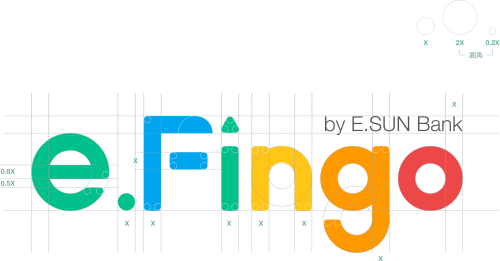
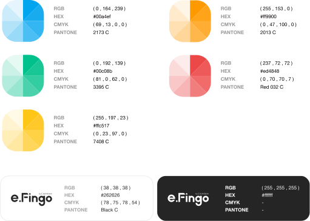
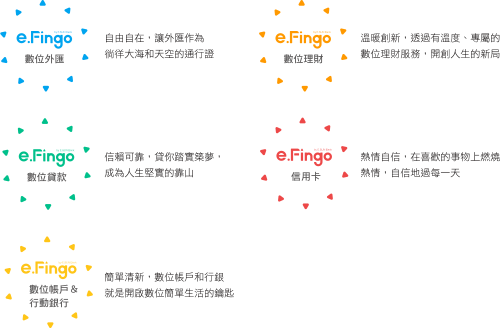
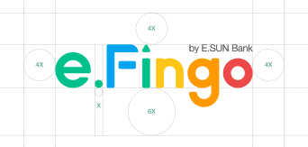
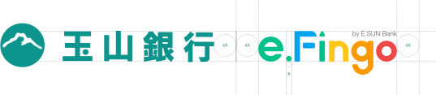
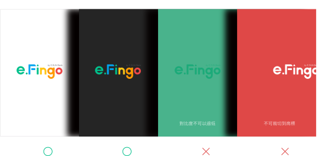
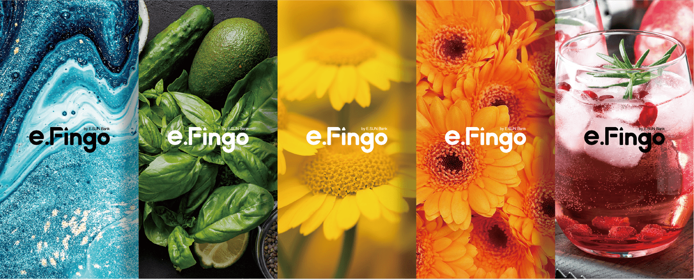
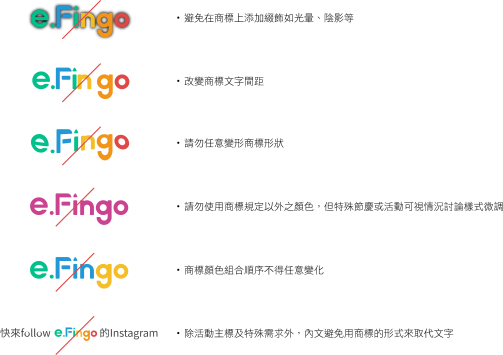

- 企業識別
- 數位品牌e.Fingo
- 吉祥物
- 社群
- ATM
Basic System
- 基本要素
- 搭配使用字型
- 標誌色彩系統
- 標誌組合規範
-
1-1-1 標誌概念標準樣式在形式上，三角形來代表山的意象，繼承玉山基因並與i做結合，代表著指標，在日常生活中指引著我們前進。在色彩上，顏色採用光的形成原理-紅橙黃綠藍的彩虹光譜，象徵著我們的數位服務就如同大自然般，與生活密不可分，期望透過數位品牌完成金融大小事。
價值主張： e.Fingo的e表示e化、Experience(體驗)、E.SUN，延續玉山提供美好的顧客服務體驗；Fingo意即Your Financial Service to Go，金融服務帶著走。e.Fingo希望以繽紛色彩豐富顧客精彩數位生活。 -
1-2-1 中、英文字型規範輸出時最小字級不得小於7級，網頁最小字級不得小於13px，以確保使用者易讀性。詳細應用規範請參照應用系統。e.Fingo品牌搭配運用_英文字體 |
適用於輸出與網頁的內文、文宣、信函等小型文字，以達品牌一致性。
 e.Fingo品牌搭配運用_中文字體 |
e.Fingo品牌搭配運用_中文字體 |適用於輸出與網頁的內文、文宣、信函等小型文字，以達品牌一致性。
-
1-3-1 標準色標誌本身為繽紛色彩的呈現，操作執行面可依規範的色彩表來搭配呈現。品牌底下的產品建議不要超過3種色彩的搭配來執行為佳。 因應在複雜背景上能清楚的呈現logo，有深色單色logo與淺色單色logo可以運用。1-3-2 標準色應用顏色與產品作呼應，意義如右側說明。產品代表色與意義 |
-
1-4-1 留白使用規範標誌與其他元素間須保持4x距離。1-4-2 大小比例使用規範依照視覺版面大小而選用適當大小比例識別系統。印刷 |網頁 |
網頁Logo使用不小於150pixel x 47pixel為佳，以確保by E.SUN Bank的可讀性，若版位過小，可使用未壓by E.SUN Bank版本，例如網頁表頭、小尺寸Banner。
1-4-3 與玉山銀行標誌組合規範標誌與標誌間須保持一定的空間距離。橫式排列 |搭配玉山銀行中英文標誌時，文字皆與e.Fingo高度齊高，左右間距須保留4x的距離。
1-4-4 背景使用規範搭配背景時，因注意標誌的可讀性，不可與背景對比過低、以及被裁切到。使用時皆以彩色標誌為主，若有特殊情形或複雜背景，則可採用單色標誌。單色背景 |多色背景 |如因背景顏色造成彩色Logo無法清晰辨識，建議改用單色Logo
1-4-5 錯誤使用範例e.Fingo商標為了讓使用者能容易識別，不得任意變更其樣式規則。錯誤用法 |